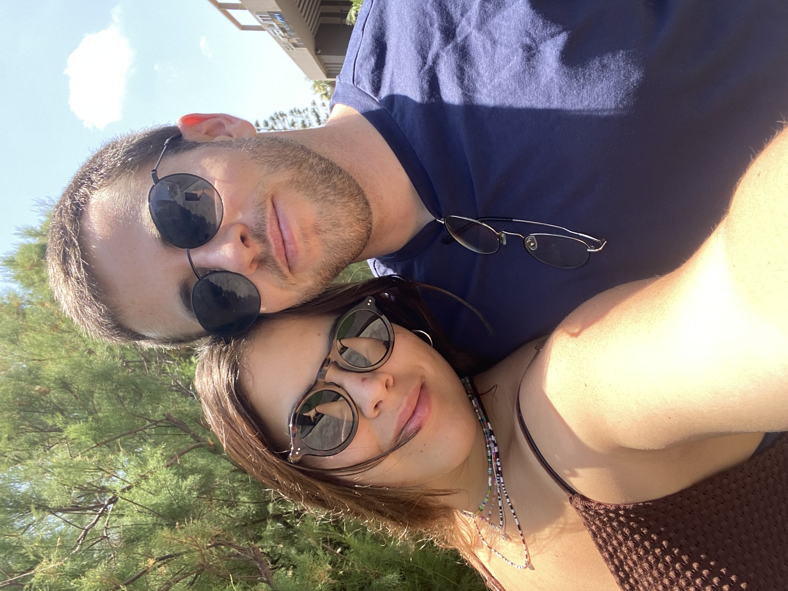

Yuval Harpaz

Summary
I am an Electrical Engineer who wants to learn to code better
Education
- Shelanu Elementary School (2005-2011)
- Rabin High School (2011-2017)
-
Tel Aviv University - Bachelor of Science, Electrical Engineering
(2017-2021)
-
The Open University - Associate degree, Computer Science (2022-Present)
Work Experience
Skills
- Python ⭐⭐⭐⭐
- C ⭐⭐⭐
- Java ⭐⭐⭐
- Web Developing ⭐
- CrossFit ⭐⭐⭐⭐
Others